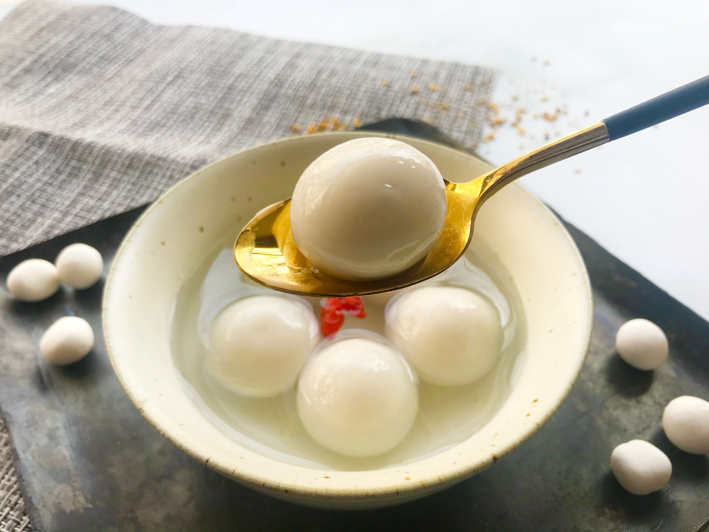

Tang Yuan

Description
A sweet Chinese dessert that is easy to make! For sweet tooths who want something chewy.
Ingredients
For the rice balls:
- 1 C Glutinous Rice Flour
- 1/2 C Room Temperature Water
For the broth:
- 6C water
- 6TBsp Brown sugar
- 1″ thinly sliced ginger
Procedure
- Mix the glutinous rice flour and water together and knead until it becomes a soft ball of dough. A texture similar to playdough. It should be soft, not too sticky also not too dry that it crumbles. Add a little water if it’s too dry, a bit more rice flour if it’s too wet/sticky.
- Divide the dough into as many color as you’d like and add your coloring to the dough! Knead and make sure the color is well-incorporated.
- Shape them into 1/2 inch or smaller rounds, or get creative and make some shapes! Cover the dough and finished tang yuan with a towel or keep them in a container with a lid to keep them from drying out as you’re working.
- To cook the tangyuan, bring a pot of water to boil, add tang yuan to the pot and boil until all the tang yuan floats to the top- that means they’re ready!
- To make the broth, make a brown sugar ginger broth(6C water, 6TBsp Brown sugar, 1″ thinly sliced ginger) and bring it to a boil then add the tang yuan to cook till they float.
Credits
This recipe is taken from Glutinous Rice Balls (Tang Yuan) recipe.